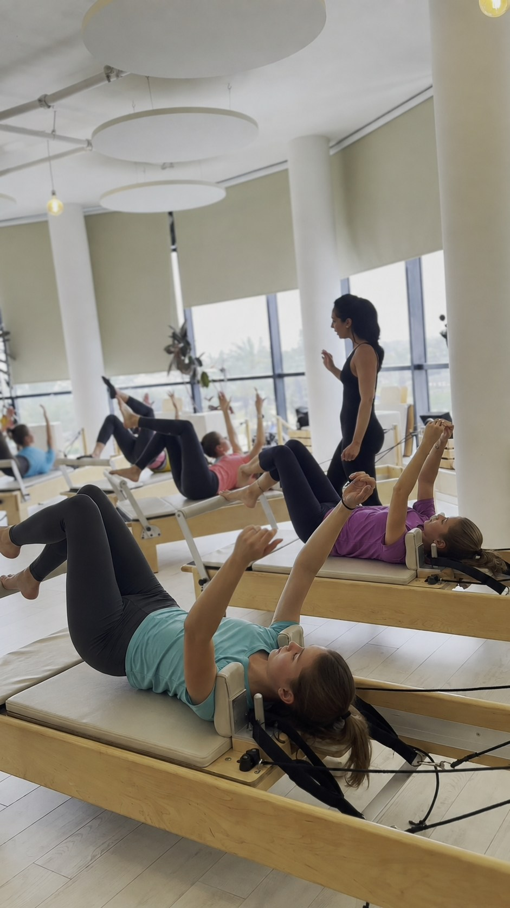

קבוצת פילאטיס מכשירים נפרדת לנערות בגילאי 12–15 בחלל הרפורמר בקניון פולג, ביום רביעי ב-17:00 (למועדים נוספים — בתיאום מול הצוות). השיעור נמשך כ-55 דקות, אימון היכרות עולה 50 ₪ כולל מע״מ, וההרשמה נעשית מול הצוות בוואטסאפ.
כל נערה עובדת על מיטת רפורמר אישית עם קפיצים ורצועות שמותאמים לרמה שלה — בלי קפיצות, בלי משקלים כבדים ובלי צורך ברקע קודם בספורט או בגמישות.
מה קורה בשיעור פילאטיס מכשירים לנערות
מיטת הרפורמר נראית ממבט ראשון כמו מכשיר מסובך, אבל ברגע שעולים עליה מבינים למה נערות מתאהבות בה כבר מהשיעור הראשון.
במקום לרוץ סביב מגרש או להרגיש שמודדים אותך מול אחרות, כל נערה מקבלת מיטה אישית עם קפיצים שנותנים גם תמיכה וגם התנגדות. הקפיצים מכוונים במדויק לכל אחת, והתרגילים נבנים בשכיבה, בישיבה ובעמידה — בקצב רגוע ומרוכז.
לא משנה אם היא אף פעם לא אהבה שיעור ספורט בבית הספר.
השיעור בנוי כך שגם נערה שלא עסקה בספורט בכלל וגם נערה שרוקדת או משחקת כדורעף מרגישות מיד בבית: אין תחרות, אין תחושה ש״כולן מסתכלות״, והמדריכה עוברת בין המיטות, מדגימה כל תרגיל ומדייקת את היציבה והנשימה.

מה בדיוק
צריך לדעת
| הפרטים | |
|---|---|
| גילאים | 12–15 |
| מתי | יום רביעי ב-17:00 · לתיאום ובירור מועדים נוספים יש לפנות לצוות |
| איפה | חלל הרפורמר · אמנון ותמר 6, קניון פולג נתניה, קומה 2 (חניה חינם + מעלית) |
| אימון היכרות | 50 ₪, כולל מע״מ |
| משך השיעור | כ-55 דקות |
| מחירי מנוי לנוער | לברר עם הצוות — המחירון באתר הוא למנויי הסטודיו למבוגרות |
| הרשמה | מול הצוות בוואטסאפ, לא דרך ההרשמה העצמית באתר |
אנחנו מפרסמים רק עובדות מאושרות: מחירי מנויי הנוער וזמינות המקומות נמסרים ישירות מול הצוות בזמן התיאום. לכל שלוש קבוצות הילדים והנוער ←
למה הורים ונערות בוחרים דווקא ברפורמר בגיל הזה
איזון לשעות מול מסך וישיבה בכיתה
נערות בגילאי 12–15 מבלות שעות ארוכות בישיבה מול מחברת וטלפון, לרוב בדיוק בזמן קפיצות גדילה. העבודה על הרפורמר מתמקדת בחיזוק שרירי הליבה, הגב העליון וחגורת הכתפיים ובהארכת הגוף — לא כהבטחה רפואית, אלא כהרגל תנועה בריא לשגרה.
קבוצה של נערות בלבד, בקצב שלהן
זו קבוצה נפרדת לגילאי 12–15, לא שיעור של מבוגרות שנערה צריכה להשתלב בו. האווירה רגועה, מעודדת ולא שיפוטית, בקבוצה קטנה שבה המדריכה באמת רואה כל אחת ומכירה אותה בשם.
ביטחון עצמי דרך שליטה בגוף
נערות רבות נרתעות מספורט תחרותי או מאולמות כושר המוניים. על מיטת הרפורמר כל אחת עובדת בקצב שלה, מרגישה מהר מאוד איך הגוף מתחזק, ויוצאת מהשיעור עם תחושת מסוגלות שקטה וגאווה אמיתית.
נוח להורים מכל דרום נתניה והסביבה
הסטודיו יושב בקניון פולג הקטן (אמנון ותמר 6) — נוח להגעה מרמת פולג, עיר ימים, אגמים וגם מאבן יהודה ויישובי הסביבה, עם חניה חינם ממש למטה.
אם יש לנערה עקמת מאובחנת, פציעה פעילה, כאב גב מתמשך או הנחיה מרופאה או מפיזיותרפיסטית — ספרו לנו מראש בזמן התיאום כדי שהמדריכה תדע ותתאים. אנחנו לא נותנים ייעוץ רפואי, ופעילות גופנית מומלץ לבצע לאחר התייעצות עם רופא.
מה ללבוש ומה להביא
לוח קבוצות הנוער בסטפס
בסטודיו יש שלוש פעילויות נפרדות לגילאי 12–15, כל אחת בחלל שלה. בחרו יום כדי לראות מה מתקיים בו:
שלוש פעילויות נפרדות לגילאי 12–15, כל אחת בחלל שלה. אימון היכרות בכל אחת מהן עולה 50 ₪, כולל מע״מ. בימי שני ושישי ובשבת אין קבוצות נוער.
לפירוט המלא של שלוש הפעילויות: חוגי כושר לילדים ונוער בנתניה ←
ככה נראה חלל הרפורמר
שאלות שהורים
שואלים אותנו
עוד בסטפס
שיעור ראשון
ב-50 ₪.
כתבו לנו בוואטסאפ ונתאם לה אימון היכרות בקבוצת פילאטיס המכשירים לנערות. בלי התחייבות.
ההרשמה לקבוצות הנוער נעשית מול הצוות · או התקשרו 052-792-7575
המחיר כולל מע״מ · ביטול שיעור עד 24 שעות לפני — ניתן לקבוע מועד חלופי. המדיניות המלאה